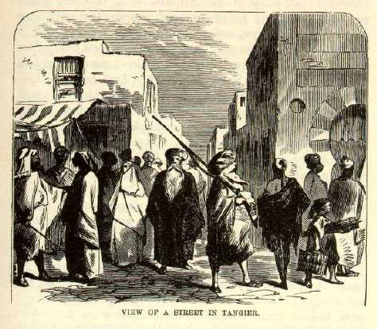

TangierThis is royal! Let those who went up through Spain make the best of it--these dominions of the Emperor of Morocco suit our little party well enough. We have had enough of Spain at Gibraltar for the present. Tangier is the spot we have been longing for all the time. Elsewhere we have found foreign-looking things and foreign-looking people, but always with things and people intermixed that we were familiar with before, and so the novelty of the situation lost a deal of its force. We wanted something thoroughly and uncompromisingly foreign--foreign from top to bottom--foreign from center to circumference--foreign inside and outside and all around--nothing anywhere about it to dilute its foreignness--nothing to remind us of any other people or any other land under the sun. And lo! In Tangier we have found it. Here is not the slightest thing that ever we have seen save in pictures--and we always mistrusted the pictures before. We cannot anymore. The pictures used to seem exaggerations--they seemed too weird and fanciful for reality. But behold, they were not wild enough--they were not fanciful enough--they have not told half the story. Tangier is a foreign land if ever there was one, and the true spirit of it can never be found in any book save The Arabian Nights. Here are no white men visible, yet swarms of humanity are all about us. Here is a packed and jammed city enclosed in a massive stone wall which is more than a thousand years old. All the houses nearly are one- and two-story, made of thick walls of stone, plastered outside, square as a dry goods box, flat as a floor on top, no cornices, whitewashed all over--a crowded city of snowy tombs! And the doors are arched with the peculiar arch we see in Moorish pictures; the floors are laid in varicolored diamond flags; in tessellated, many-colored porcelain squares wrought in the furnaces of Fez; in red tiles and broad bricks that time cannot wear; there is no furniture in the rooms (of Jewish dwellings) save divans--what there is in Moorish ones no man may know; within their sacred walls no Christian dog can enter. And the streets are oriental--some of them three feet wide, some six, but only two that are over a dozen; a man can blockade the most of them by extending his body across them. Isn't it an oriental picture? |